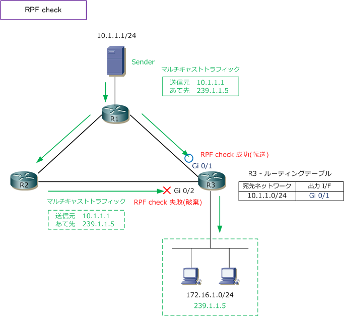
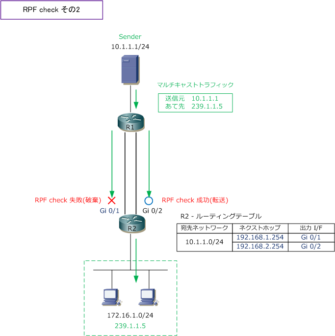

RPF check
RPF checkとは
RPF（Reverse Path Forwarding）check は、受信したマルチキャストパケットの送信元IPアドレスと ユニキャストのルーティングテーブルを見て、Senderから最短ルートで転送されたものであるかを確認 して、最短ルートで転送されたマルチキャストパケットではない場合はそれを破棄する機能のことです。
このRPFチェックにより、マルチキャストルーティングにおけるパケットの重複受信やループを回避する ことができます。下図ではSenderからReceiverまでの経路が冗長化されており、RPFチェックがないと マルチキャストパケットが重複して届いてしまう構成です。
受信するマルチキャストの送信元IPアドレスは「SenderのIPアドレス」です。そのSenderのIPアドレスに 到達するための最短経路と出力インターフェースは、ユニキャストのルーティングテーブルに載っています。 このSenderのIPアドレスに到達するための出力インターフェースと、マルチキャストパケットを受信した インターフェースとが一致すれば、受信したマルチキャストは最短経路でルーティングされてきたと見なし RPFチェックは成功します。

上図の場合は、R3のGi0/1とGi0/2の2つのインターフェースへ、マルチキャストパケットは着信しますが、 R3でRPFチェックが行われる結果、Gi0/1に着信したマルチキャストパケットはRPFチェックに成功して 転送されますが、Gi0/2に着信したマルチキャストパケットはRPFチェックに失敗して破棄されます。結果 重複することなくLAN側へマルチキャストパケットが転送されていきます。なお、このRPFチェックは全て のマルチキャストルータでデフォルトで行われる動作です。
「一体どこへ向かうのか」ではなく「一体どこから来たのか」なのでReverse Path Forwardingです。なお、 RPFチェックが成功するインターフェースのことを、RPFインターフェースと言います。上述の解説どおり RPFインターフェースは「マルチキャストパケットを受信するインターフェース」であることが分かります。
RPF check - 宛先ネットワークへ複数のパスがある場合
RPFインターフェースは、マルチキャストパケットの送信元IPアドレスとユニキャストルーティングテーブル から自動的に決定されることを解説しました。下図のように同じ宛先ネットワークに複数のルートが存在する 場合には、ネクストホップアドレスの値が大きいルート情報の出力インターフェースがRPFインターフェース となります。複数の等コストパスのルートがあっても、RPFインターフェースは常に1つだけとなります。

上図では、SenderのIPアドレスに到達するための最短経路は2つあります。この場合は、ネクストホップ アドレスの値が大きいルート情報は「ネクストホップアドレスが 192.168.2.254 のルート」となります。 従って、R2では「 GigabitEthernet0/2 」がRPFインターフェースとなります。RPFインターフェースに 着信したマルチキャストパケットは「RPFチェック」に成功して、マルチキャストパケットを転送します。
ユニキャスト伝送では、インターフェースに着信したユニキャストパケットの宛先アドレスを見て転送します。 マルチキャスト伝送では、インターフェースに着信したマルチキャストパケットの「送信元アドレス」を先ず 見ます。次に、その送信元アドレスが、ユニキャストのルーティングテーブル上で送信元ネットワークに戻る ためのルート情報の出力インターフェースから着信している場合はRPF checkを成功させて、次へ転送します。